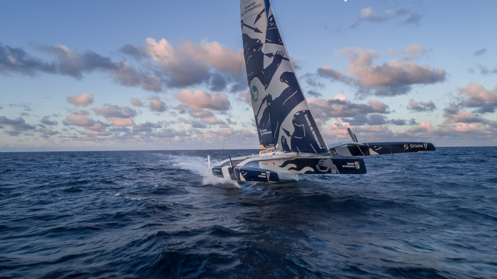

Projet BTS SN-IR
Un tableau de bord de course clair, visuel et temps reel.
VELA Tracking suit les bateaux et les balises d'une regate, en centralisant les positions, la vitesse et l'historique de course. Cette version met en avant l'interface web et la fenetre Qt, pensee comme une IHM Raspberry de demonstration pour un petit ecran.
2Coureurs visibles
3Balises visibles
Wi-FiArchitecture locale
Les trois blocs du projet
Une vue simple pour presenter le systeme sans dependre des assets Mobirise.
Vision
Suivi de course en differe
Une carte sombre, des positions lisibles et une lecture immediate des points de la course.

Donnees
Classement et informations de course
Une page de classement statique qui reprend les donnees de course dans un format plus net.

Contexte
Presentation du projet
Le contexte, l'objectif et l'organisation de l'equipe, presentes dans une mise en page simple.